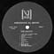
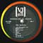
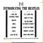

|

A Comprehensive Discography & Price Guide for VJLP-1062 By Perry Cox, Robert York, Mitch McGeary and Bruce Spizer Revised August 2000. © 1995-2001 All rights reserved |
|
|
A Comprehensive Discography & Price Guide for VJLP-1062 By Perry Cox, Robert York, Mitch McGeary and Bruce Spizer Revised August 2000. © 1995-2001 All rights reserved |
|
| Welcome to our Vee-Jay Introducing The Beatles page. It seems almost every copy of this album that turns up is a fake, due to the fact that several different companies in the 60s and through the 70s manufactured an endless array of different counterfeit versions. Add those to the more than 30 different authentic versions that VJ managed to produce in 1963 and 1964, and you have quite a complicated situation for collectors and historians. More variations of this album exist than perhaps any record every issued by any artist. It is the most frequently asked about LP on the Internet, and probably causes the most confusion for collectors of any Beatles album ever released. Some of these fakes are remarkably close to the originals, with the quality of some covers even equaling or exceeding that of originals, making them a little harder to authenticate. Fortunately, there are easily identifiable clues in most cases, which we will cover thoroughly. This Reference Guide was made to help both the novice and the experienced collector identify and authenticate copies of Introducing The Beatles, including both real and counterfeit issues, and to determine their rarity and value. We welcome any comments, suggestions, additions, and/or corrections for this page.
|
| MONO COVERS - VERSION I | ||
| Number | Description | Value |
| VJ 1062 (1).MC1 | Ad-back (Story of the Ad-Back) | $1500 |
| VJ 1062 (1).MC2A | Blank back / with "Printed in USA" on front cover | $1200 |
| VJ 1062 (1).MC2B | Blank back / without "Printed in USA" on front cover | $1200 |
| VJ 1062 (1).MC3 | titles on back (also known as "column back") | $700 |
| STEREO COVERS - VERSION I | ||
| Number | Description | Value |
| VJ 1062 (1).SC1 | Ad-back | $3500 |
| VJ 1062 (1).SC2A | Blank back / with "Printed in USA" on front cover | $2500 |
| VJ 1062 (1).SC2B | Blank back / without "Printed in USA" on front cover | $2500 |
| VJ 1062 (1).SC3 | titles on back (originals are very scarce, almost all copies of this
version that turn up are counterfeit) |
$7000 |
| MONO COVERS - VERSION II | ||
| Number | Description | Value |
| VJ 1062 (2).MC1A | "Please Please Me" with no comma | $75 |
| VJ 1062 (2).MC1B | "Please, Please Me" with comma | $100 |
| VJ 1062 (2).MC1C | "Please, Please Me" with comma / number "2" on back cover | $100 |
| VJ 1062 (2).MC1D | titles on back / pasteover | $650 |
| STEREO COVERS - VERSION II | ||
| Number | Description | Value |
| VJ 1062 (2).SC1 | titles on back | $500 |
| VJ 1062 (2).SC2 | titles on back / mono cover w/white "Stereophonic" sticker | $700 |
| VJ 1062 (2).SC3 | titles on back / mono cover w/gold foil "Stereo" sticker | $800 |
| VJ 1062 (2).SC4 | titles on back / mono cover w/ "Stereo" embossed | $800 |
| MONO DISCS - VERSION I | ||||||
| Number | Logo | Label | Description | LP/M | Plant | Value |
| VJ 1062 (1).MR1A | oval | colorband | centered titles | yes | ARP | $400 |
| VJ 1062 (1).MR1B | oval | colorband | left justified titles | no | MR | $400 |
| VJ 1062 (1).MR1C | oval | colorband | left justified titles | yes | SP | $400 |
| VJ 1062 (1).MR2 | oval | colorband | "45" size label | no | MR | $500 |
| VJ 1062 (1).MR3 | brackets | colorband | no | ARC | $1000 | |
| STEREO DISCS - VERSION 1 | ||||||
| Number | Logo | Label | Description | LP/M | Plant | Value |
| VJ 1062 (1).SR1A | oval | colorband | centered titles / "Stereo" @12:00 | yes | ARP | $2000 |
| VJ 1062 (1).SR1B(i) | oval | colorband | left justified titles / "Stereo" @3:00 | no | MR | $1700 |
| VJ 1062 (1).SR1B(ii) | oval | colorband | left justified titles / "Stereo" @9:00 | no | MR | $1700 |
| MONO DISCS - VERSION II | ||||||
| Number | Logo | Label | Description | LP/M | Plant | Value |
| VJ 1062 (2).MR1A | oval | colorband | left justified titles | no | SP | $200 |
| VJ 1062 (2).MR1B | oval | colorband | left justified titles | no | COL | $200 |
| VJ 1062 (2).MR2A | brackets | colorband | centered titles | yes | ARP | $100 |
| VJ 1062 (2).MR2B | brackets | colorband | left justified titles | no | MR | $100 |
| VJ 1062 (2).MR2C | brackets | colorband | left justified titles | yes | SP | $100 |
| VJ 1062 (2).MR2D(i) | brackets | colorband | left justified titles / indented credits / "LONGPLAYING" one word | yes | ARC | $100 |
| VJ 1062 (2).MR2D(ii) | brackets | colorband | left justified titles / indented credits / "LONG PLAYING" two words | yes | ARC | $100 |
| VJ 1062 (2).MR2E | brackets | colorband | left justified titles / "SIDE" (all caps) | no | W? | $100 |
| VJ 1062 (2).MR3 | brackets (small) | colorband | "45" size label | no | ARP | $200 |
| VJ 1062 (2).MR4A | VJ block logo | silver on black | "SIDE" (all caps) | no | COL | $100 |
| VJ 1062 (2).MR4B | VJ block logo | silver on black | "Side" (not all caps) | no | COL | $100 |
| VJ 1062 (2).MR5 | oval | silver on black | no | COL? | $200 | |
| VJ 1062 (2).MR6 | brackets (small) | silver on black | no | SP | $800 | |
| STEREO DISCS - VERSION II | ||||||
| Number | Logo | Label | Description | LP/M | Plant | Value |
| VJ 1062 (2).SR1A | oval | colorband | left justified titles (Existence Unconfirmed) |
yes | ARP | $700 |
| VJ 1062 (2).SR1B | oval | colorband | centered titles (Existence Unconfirmed) |
no | MR | $700 |
| VJ 1062 (2).SR2A | brackets | colorband | centered titles / "Stereo" @12:00 | yes | ARP | $500 |
| VJ 1062 (2).SR2B(i) | brackets | colorband | left justified titles / "Stereo" @3:00 / stereo in medium print / "Side" (not all caps) | no | MR | $500 |
| VJ 1062 (2).SR2B(ii)a | brackets | colorband | left justified titles / "Stereo" @3:00 / stereo in small print / "Side" (not all caps) | no | MR | $500 |
| VJ 1062 (2).SR2B(ii)b | brackets | colorband | left justified titles / "Stereo" @3:00 / stereo in small print / "SIDE" (all caps) | no | MR | $500 |
| VJ 1062 (2).SR2C | brackets | colorband | left justified titles / indented credits / "Stereo" printed twice on label | yes | ARC | $500 |
| VJ 1062 (2).SR3 | oval | colorband | "45" size label / "Stereo" @3:00 | no | MR | $850 |
| VJ 1062 (2).SR4A | VJ block logo | silver on black | thick "Stereo" @9:00 | no | COL | $600 |
| VJ 1062 (2).SR4B | VJ block logo | silver on black | thin "Stereo" @9:00 | no | COL | $600 |
| PRESSING PLANT DESIGNATIONS | |||
| ARP | American Record Pressing Co., Mich. | SP | Southern Plastics, Inc., Tenn. |
| MR | Monarch Record Mfg. Co., Calif. | COL | Columbia Record, Conn. |
| ARC | Allentown Record Co. Inc., Penn. | W | H.V. Waddell Co., Calif. |
Perhaps the most distinctive component in the history of Beatles records is the album Introducing The Beatles (Vee-Jay VJLP/SR-1062). This eccentric LP is distinctive on many fronts, not the least of which is that its dozen tracks have proliferated into over two dozen subsequent albums and singles.
This early 1964 product of Chicago's Vee-Jay label competed heartily in the marketplace, right along with the big boys over at Capitol. As a small, independent company with a big hit record on their hands, Vee-Jay and their vendors labored around the clock to meet the enormous demand for this LP. Although a huge seller, its sales life was cut short by litigation with Capitol. Unable to endure costly legal battles, Vee-Jay reached a settlement with Capitol under which its rights to all of its Beatles recordings were turned over to Capitol on October 15, 1964.
Not surprisingly, most of the world's rare and valuable records, including Introducing the Beatles, have been counterfeited -numerous times and in a myriad of variations. It is probably the most counterfeited record in history, and deserving of consideration for a gold or platinum award in the category: Rock Album Most Frequently Faked.
With so many different bogus copies floating around, perhaps we should begin by giving a precise description of the original album. Knowing how to spot an original is one of the best weapons against getting stuck with a pretender.
The first issue covers were manufactured in Chicago by the offset printing firm Coburn & Company just after July 23rd 1963. This company printed up the first 6000 front slicks and back liner notes. These 6000 are the only cover slicks that say "Printed in U.S.A" on the front cover, vertically from the bottom left corner along the spine. Later covers were printed by Ivy Hill Lithograph Co. at their New York and California locations. All original covers have a glossy coated paper stock, both front and back. If either the front or the back cover is flat (lacking gloss) it's a counterfeit.
Although color shades do vary on originals, the printing of the photo and text is always very sharp and clear. Any with poor quality printing are probably counterfeits. All legitimate covers are made using varying shades of gray or tan cardboard, with the printed front and back slicks bonded on them. All original covers we have seen have a 1/4" overlap of cardboard at the top and bottom of the inside cover. This check can only be made by viewing the inside of the cover at the top and at the bottom. On most fakes, these overlaps are either much larger than 1/4", or there is no flap at all. The California plant made a small quantity of original monaural covers that have no flap at all, but they still have the glossy back cover slick as well as high quality printing. Also, these come with an authentic disc inside, yet another way to help determine originality.
A few counterfeits do have covers with high quality printing, but their overall construction and/or disc quality are noticeably imperfect.
While it is very helpful to have a known original on hand for comparison, few folks have that luxury. When this is not possible, use the following checklist to make a determination regarding authenticity.
| Some of the more common characteristics found on COUNTERFEIT COVERS:
Some of the more common characteristics found on COUNTERFEIT DISCS:
|
| Some of the more common characteristics found on ORIGINAL COVERS:
Some of the more common characteristics found on ORIGINAL DISCS:
|
| "OTHER FINE
ALBUMS OF SIGNIFICANT INTEREST" Vee-Jay used three different inner protective disc sleeves:
|
| Counterfeit Examples | |
|---|---|
 |
All-black label, brackets logo, version 1 songs |
 |
Black colorband label, brackets logo, version 1 songs |
 |
Back of jacket, version 1 songs (paper stock is flat, not semi-gloss or glossy) |
| |
| Songs, Pictures and Stories of The fabulous Beatles Records on Vee-Jay | |
 |
The definitive book about The Beatles on Vee-Jay Records. |
![[ Links ]](vjplinks.jpg)

This page was last updated on Friday July 13th, 2001 at 11:04am. |
Introducing The Beatles Discography & Price Guide
by Perry Cox, Robert York, Mitch McGeary and Bruce Spizer
© 1995-2001 All rights reserved


{kind=link}
{kind=link}
{kind=link}
{kind=link}
{kind=link}
{kind=link}
{kind=link}
{kind=link}
{kind=link}
{kind=link}
{kind=link}
{kind=link}
{kind=link}
{kind=link}
{kind=link}
{kind=link}
{kind=link}
{kind=link}
{kind=link}
{kind=link}
{kind=link}
{kind=link}
{kind=link}
{kind=link}
{kind=link}
{kind=link}
{kind=link}
{kind=link}
{kind=link}
{kind=link}
{kind=link}
{kind=link}
{kind=link}
{kind=link}
{kind=link}
{kind=link}
{kind=link}
{kind=link}
{kind=link}
{kind=link}
{kind=link}
{kind=link}
{kind=link}
{kind=link}
{kind=link}
{kind=link}
{kind=link}
{kind=link}
{kind=link}
{kind=link}
{kind=link}
{kind=link}
{kind=link}
{kind=link}
{kind=link}